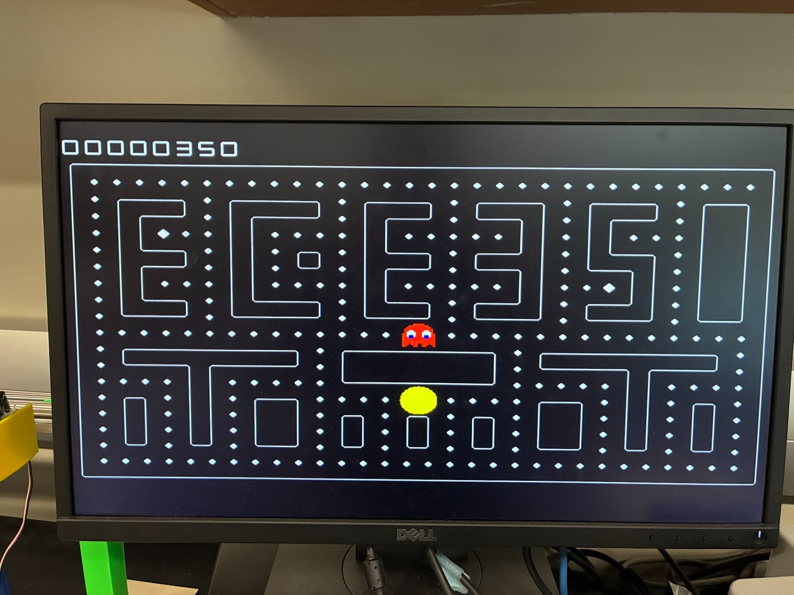

Tools: Verilog, Vivado, Assembly

The maze spells ECE 350. The score in the upper left is the number of pellets eaten. Pac-Man and the ghost start near the center.
For ECE 350 I put Pac-Man on a Nexys A7. The board sits in a box with a joystick and a speaker. Each joystick direction is a switch in a pull-up circuit on a protoboard, so a push drives that pin low, and those four signals go to a Pmod header. The game also accepts the board buttons. Video goes out over VGA at 640 by 480, and the speaker plays a waka while Pac-Man’s mouth is moving. That sound is a trapezoidal wave stepped through twelve frequencies, forty times a second, with a short sweep at each step.
The screen is a grid of 20 by 20 tiles, 32 across and 24 down. The top and bottom two rows hold the score and the remaining lives. Walls and turns are tiles 1 through 13, and every pellet has its own id so a bitmap can mark which ones are still there. The maze spells ECE 350, and the dead ends in the E, the 3, and the 5 make it harder than a plain loop. Pac-Man is a 35 by 35 sprite: a closed mouth, plus an open mouth in each direction. The ghost is the same size, with eyes in four directions and two leg frames. A neighboring tile counts as a wall only when the character is centered in its own tile, so both of them turn on the grid instead of clipping a corner.
The game is about 350 lines of assembly on the pipelined CPU from the same course, clocked at 25 MHz. The program does not draw pixels. A few registers are wired straight to the VGA controller. Register 1 carries whether the game has started, the joystick direction, the walls beside Pac-Man and the ghost, and a power-mode bit. Registers 27 through 30 carry the squared distance from Pac-Man to the four tiles next to the ghost, shifted to fit an immediate. Register 2 writes back whether each character should move and which way. Register 10 is the binary score, and register 11 is that score as eight decimal digits.
Play starts on the first joystick move. Pac-Man takes the requested direction when that way is open. Otherwise it keeps going, and it stops when the current direction is blocked too. The ghost always moves. It picks the open direction, other than a reversal, with the shortest of those four distances. One of two larger pellets, in the left E and in the 5, turns the ghost blue for about five seconds and switches the same search to the longest distance. Eating the ghost in that window sends it home. Any other collision costs a life, and both characters return to the center. Three lives end the round. The score stays up until the next input, which clears the board and starts again. Clearing every pellet respawns them without a pause.
The score sprites come from a double-dabble conversion. A counter runs for 32 bits. Each step shifts the decimal register left and brings in the next bit of the binary score, then adds three to any digit that is already five or more. Digits 0 through 4 double cleanly. Digits 5 through 9 need that add so the following shift carries a one into the next digit and leaves the low digit of the doubled value. A greedy ghost that is allowed to reverse will step toward Pac-Man and step straight back, so it vibrates in a dead end. Refusing a reversal unless it is the only open direction stops that.